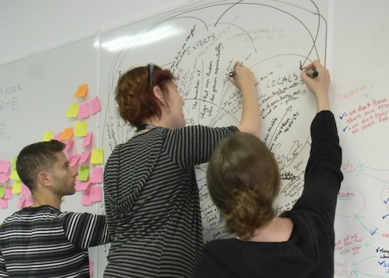

Parque Natural
This is a team project that spans two semesters and aims to increase environmental awareness. Our client is Parque Natural, the organization that manages the natural reserves of Madeira island. My role is tech lead and documentation lead, and I actively participate in the design and research involved. The video below introduces our project.
During Spring 2012 we conducted research. The user groups of interest are tourists, locals, farmers and fishermen. The map below shows areas we visited: nature paths, ocean activities, farms, sea ports and fresh food markets.
During these visits, we employed 4 research methods: observations, contextual inquiries, questionnaires, and storytelling. The following figure summarizes the research plan.
After getting research data, we consolidated it using affinity notes and cultural models. We built our models on the whiteboard and digitized them using Omnigraffle.
I created the physical model below using Adobe Illustrator. The model visually summarizes the insights we identified from research.
The Spring semester ended with a client presentation and a report to the client. We currently have 11 personas and several ideas from the envisioning sessions. During Fall 2012, we will settle on a coherent solution and implement it.